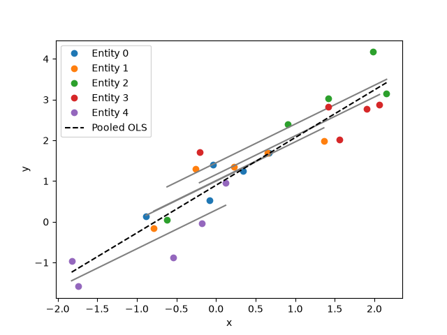
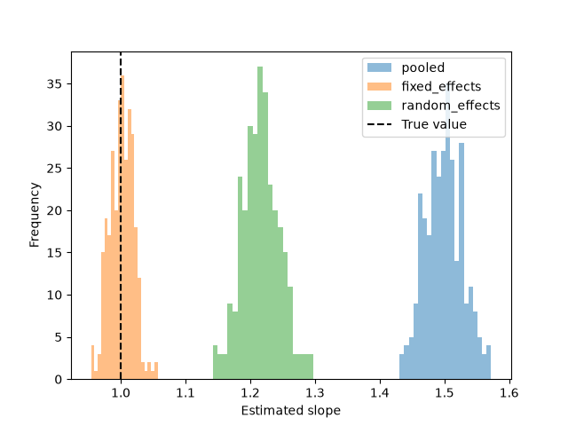

第 10 章: パネル・データ分析¶
10.1 この章の地図¶
第 9 章では、個人効果 a_i が x と相関するとき、プーリング OLS が偏り、1 階差分が、それを直すことを見ました。この章では、個人効果を扱う標準的な方法を、3 つ書きます。
| 方法 | 考え方 | 個人効果と x が相関するとき |
|---|---|---|
| 固定効果（FE） | 個人ごとの平均を引いて（ウィズイン変換）、個人効果を消す | 偏らない |
| ランダム効果（RE） | 個人効果を、誤差の一部として扱い、系列相関を考慮して推定する（準差分） | 偏る |
| 相関ランダム効果（CRE） | x の個人平均を、説明変数に足す（Mundlak） | 係数は、FE と同じ |
どれを使うかを、Hausman 検定で判断します。さらに、同じ個人の誤差が相関しているときの標準誤差（クラスター標準誤差）も書きます。最後に、実際のパネル・データ（賃金）で試し、第 2 部の到達チェックを行います。

| 項目 | 内容 |
|---|---|
| 計量経済学の題材 | 固定効果、ウィズイン変換、ダミー変数による固定効果、ランダム効果、θ（準差分の係数）、相関ランダム効果、Hausman 検定、クラスター標準誤差 |
| 使う Python の機能 | pandas の groupby().transform、データクラス、行列計算（np.linalg.inv） |
| 新しく導入するライブラリ | linearmodels（PanelOLS・RandomEffects。照合専用。推定は、先に自分の式で書く） |
| 完成形 | PanelFit、within_transform、fixed_effects、least_squares_dummy_variables、random_effects_theta、random_effects、correlated_random_effects、hausman_test、cluster_standard_errors、estimator_comparison、hausman_rejection_rate、pooled_standard_errors |
| ファイル | 実装: lib/chapter10/panel.py、lib/chapter10/plot.py（図）／テスト: test/chapter10/test_panel.py、test/chapter10/test_plot.py（自分で書くときは、practice/chapter10/ に、同じ名前で作ります） |
| データ | 手計算用の 6 個の観測値、乱数のパネル、10.6 節だけ、実際のデータ（wooldridge の wagepan） |
計量経済学の式とコードの対応¶
| 計量経済学 | 式 | コード |
|---|---|---|
| ウィズイン変換 | ỹ_it = y_it − ȳ_i、x̃_it = x_it − x̄_i | within_transform(panel, columns) |
| 固定効果 | ỹ を x̃ で回帰（定数項なし）。自由度は n − N − k | fixed_effects(panel, y, xs) |
| ダミー変数 | y を x と個人ダミーで回帰 | least_squares_dummy_variables(...) |
| θ | θ = 1 − √(σ_u² ÷ (σ_u² + T·σ_a²)) | random_effects_theta(...) |
| ランダム効果 | y − θȳ_i を、x − θx̄_i（と、定数項 1 − θ）で回帰 | random_effects(...) |
| 相関ランダム効果 | y を x と x̄_i で回帰 | correlated_random_effects(...) |
| Hausman 検定 | H = (b_FE − b_RE)′ (V_FE − V_RE)⁻¹ (b_FE − b_RE) ~ χ²(k) | hausman_test(fixed, random, names) |
| クラスター標準誤差 | (X′X)⁻¹ (Σ_g X_g′e_g e_g′X_g) (X′X)⁻¹ × 補正 | cluster_standard_errors(y, x, groups) |
記号について: N は個人の数、T は期数、k は x の係数の数、σ_u² は idiosyncratic な誤差の分散、σ_a² は個人効果の分散です。一覧は、記号について を参照してください。
前提とする章¶
| できること | 章 |
|---|---|
ダミー変数 make_dummies |
第 7 章 |
| 個人効果、プーリング OLS、1 階差分 | 第 9 章 |
| 頑健な標準誤差 | 第 8 章 |
10.2 準備¶
cd apps/econometrics-programming/python
uv sync
uv run pytest test/chapter10
30 passed
自分でコードを書くときは、practice/chapter10/ に、完成形と同じ名前（panel.py・test_panel.py）のファイルを作ります。
10.3 予想する¶
3 人、2 期のパネルで、y = a_i + 2·x です。a は 1、6、−1（個人効果）、x は個人 0 が 1、2、個人 1 が 2、4、個人 2 が 0、3 です。
- 個人ごとの平均を引くと、x と y は、どうなりますか。引いたあとの y を x で回帰すると、傾きは、いくつですか
- 個人ごとのダミー変数を入れた回帰の、x の係数は、固定効果と、同じですか
- 個人効果が x と相関するとき、固定効果・ランダム効果・プーリング OLS のうち、偏らないのはどれですか
- 2 期間のパネルで、固定効果と 1 階差分は、同じですか
10.4 パネル・データ分析の考え方¶
固定効果（ウィズイン変換）¶
y_it = α + β·x_it + a_i + u_it の両辺から、個人ごとの平均（ȳ_i = α + β·x̄_i + a_i + ū_i）を引くと、a_i（と α）が消えます。
ỹ_it = β·x̃_it + ũ_it
ỹ を x̃ で回帰（定数項なし）したものが、固定効果推定量です。個人の中の変化だけを使うので、個人効果が x と相関していても、偏りません。標準誤差を計算するときは、自由度に注意します。個人の平均を N 個推定しているので、自由度は n − k ではなく、n − N − kです。
ダミー変数による固定効果¶
個人ごとのダミー変数を、説明変数に足して回帰（LSDV）しても、x の係数は、ウィズイン変換と、ちょうど一致します（FWL。第 3 章）。標準誤差も、一致します。ただし、N が大きいと、ダミー変数の数が増えて、計算が重くなります。
ランダム効果¶
個人効果 a_i が、x と相関しないと仮定すると、a_i を誤差項に入れたまま、効率的に推定できます。同じ個人の誤差は、a_i を共有するので、相関します。この相関を考慮して、各変数から、個人平均の θ 倍を引いた（準差分）変数で回帰します。θ = 0 ならプーリング OLS、θ = 1 なら固定効果です。θ は、個人効果の分散 σ_a² が大きいほど、期数 T が大きいほど、1 に近づきます。
相関ランダム効果¶
x の個人平均 x̄_i を、説明変数に足して、プーリング OLS で回帰します（Mundlak）。x の係数は、固定効果と、ちょうど一致します。x̄_i の係数が 0 でなければ、個人効果と x が、相関しているとわかります。
Hausman 検定¶
固定効果は、個人効果が x と相関しても偏りませんが、ランダム効果は、相関しないと偏ります。相関しないなら、両者は近く、ランダム効果のほうが効率的です。Hausman 検定は、2 つの係数の差が、ゼロとみなせるかを調べます。棄却されたら、固定効果を使います。
クラスター標準誤差¶
同じ個人の誤差が相関しているとき、通常の標準誤差は、小さすぎます。個人（クラスター）ごとに、スコア X_g′e_g を足してから、2 乗するサンドイッチ推定量が、クラスター標準誤差です。
10.5 プログラミング¶
Red: ウィズイン変換と固定効果の手計算¶
予想 1 の手計算です。個人 0 の x の平均は 1.5、y の平均は 4 なので、引いた値は x が −0.5、0.5、y が −1、1。個人 1 は x が −1、1、y が −2、2。個人 2 は x が −1.5、1.5、y が −3、3 です。ỹ = 2·x̃ がちょうど成り立つので、傾きは 2、残差は 0、自由度は n − N − k = 6 − 3 − 1 = 2 です。
import numpy as np
import pandas as pd
import pytest
from lib.chapter10.panel import fixed_effects, within_transform
PANEL = pd.DataFrame(
{
"entity": [0, 0, 1, 1, 2, 2],
"time": [0, 1] * 3,
"x": [1, 2, 2, 4, 0, 3],
"y": [3, 5, 10, 14, -1, 5],
},
dtype=float,
)
def test_ウィズイン変換は個人ごとの平均を引く() -> None:
tilde = within_transform(PANEL, ["x", "y"])
assert tilde["x"].tolist() == [-0.5, 0.5, -1, 1, -1.5, 1.5]
assert tilde["y"].tolist() == [-1, 1, -2, 2, -3, 3]
def test_ウィズイン変換すると個人ごとの平均は0() -> None:
panel = sample()
tilde = within_transform(panel, ["x", "y"])
means = tilde.groupby(panel["entity"]).mean()
assert means.to_numpy() == pytest.approx(0, abs=1e-12)
def test_固定効果は個人の効果を除いて真の傾きを復元する() -> None:
fit = fixed_effects(PANEL, "y", ["x"])
assert fit.coefficients["x"] == pytest.approx(2)
assert fit.standard_errors["x"] == pytest.approx(0, abs=1e-9)
assert fit.df_resid == 6 - 3 - 1
assert fit.n_obs == 6
Green: ウィズイン変換と固定効果を実装する¶
@dataclass(frozen=True)
class PanelFit:
"""パネル・データの推定結果（係数・標準誤差・共分散行列・誤差の分散の推定値）。"""
coefficients: pd.Series
standard_errors: pd.Series
covariance: pd.DataFrame
sigma2: float
r_squared: float
n_obs: int
df_resid: int
def within_transform(
panel: pd.DataFrame, columns: list[str], entity: str = "entity"
) -> pd.DataFrame:
"""ウィズイン変換: 各列から、個人ごとの平均を引く。"""
means = panel.groupby(entity)[columns].transform("mean")
return panel[columns] - means
def _fit_without_constant(y: pd.Series, x: pd.DataFrame, df_resid: int) -> PanelFit:
"""定数項なしの回帰。誤差の分散は、指定した自由度 df_resid で割って推定する。"""
result = fit_ols(y, x, constant=False)
design = x.to_numpy(dtype=float)
sigma2 = float(result.residuals @ result.residuals) / df_resid
covariance = sigma2 * np.linalg.inv(design.T @ design)
names = list(x.columns)
return PanelFit(
coefficients=result.coefficients,
standard_errors=pd.Series(np.sqrt(np.diag(covariance)), index=names),
covariance=pd.DataFrame(covariance, index=names, columns=names),
sigma2=sigma2,
r_squared=result.r_squared,
n_obs=len(y),
df_resid=df_resid,
)
def fixed_effects(
panel: pd.DataFrame, y: str, xs: list[str], entity: str = "entity"
) -> PanelFit:
"""固定効果推定: ウィズイン変換した y を、x で回帰する（定数項なし）。
個人の数 N を引いた、自由度 n − N − k で、標準誤差を計算する。
"""
tilde = within_transform(panel, [y, *xs], entity)
df_resid = len(panel) - panel[entity].nunique() - len(xs)
return _fit_without_constant(tilde[y], tilde[xs], df_resid)
from lib.chapter10.panel import fixed_effects, within_transform
print(within_transform(PANEL, ["x", "y"]))
fit = fixed_effects(PANEL, "y", ["x"])
print(fit.coefficients.to_dict(), round(float(fit.standard_errors["x"]), 10), fit.df_resid)
x y
0 -0.5 -1.0
1 0.5 1.0
2 -1.0 -2.0
3 1.0 2.0
4 -1.5 -3.0
5 1.5 3.0
{'x': 2.0} 0.0 2
手計算と一致します（予想 1）。第 9 章では、プーリング OLS が 3.2 に偏った同じデータで、固定効果は、真の値 2 を、ちょうど復元します。
乱数のパネルで、3 つの方法を比べる¶
第 9 章の draw_panel で、個人 100 人、5 期、x と個人効果の相関 0.7 のパネルを作ります（真の傾きは 1）。
import numpy as np
from lib.chapter03.multiple import fit_ols
from lib.chapter09.did import draw_panel
from lib.chapter10.panel import (
correlated_random_effects,
fixed_effects,
least_squares_dummy_variables,
random_effects,
random_effects_theta,
)
panel = draw_panel(100, 5, 0.7, np.random.default_rng(0))
fe = fixed_effects(panel, "y", ["x"])
print("fe", fe.coefficients.round(4).to_dict(), fe.standard_errors.round(4).to_dict(), fe.df_resid)
print("lsdv", least_squares_dummy_variables(panel, "y", ["x"]).round(4).to_dict())
print("cre", correlated_random_effects(panel, "y", ["x"]).round(4).to_dict())
pooled = fit_ols(panel["y"], panel[["x"]])
print("pooled", pooled.coefficients.round(4).to_dict(), pooled.standard_errors.round(4).to_dict())
fe {'x': 0.9887} {'x': 0.0235} 399
lsdv {'coefficient': {'x': 0.9887}, 'standard_error': {'x': 0.0235}}
cre {'coefficient': {'x': 0.9887}, 'standard_error': {'x': 0.0351}}
pooled {'const': 1.0417, 'x': 1.4342} {'const': 0.0424, 'x': 0.0355}
固定効果の傾きは 0.9887 で、真の値 1 に近く、自由度は 399（500 − 100 − 1）です。ダミー変数推定（LSDV）の係数と標準誤差は、固定効果と、同じ値です（予想 2）。相関ランダム効果の係数も、0.9887 と同じです（標準誤差は、別の計算なので、0.0351 と違います）。プーリング OLS は、1.4342 と偏ります。
def least_squares_dummy_variables(
panel: pd.DataFrame, y: str, xs: list[str], entity: str = "entity"
) -> pd.DataFrame:
"""ダミー変数による固定効果推定: 個人ごとのダミー変数を、説明変数に足して回帰する。
x の係数と標準誤差の表（列は coefficient・standard_error）を返す。
"""
result = fit_ols(panel[y], panel[xs].join(make_dummies(panel[entity])))
return pd.DataFrame(
{
"coefficient": result.coefficients[xs],
"standard_error": result.standard_errors[xs],
}
)
def correlated_random_effects(
panel: pd.DataFrame, y: str, xs: list[str], entity: str = "entity"
) -> pd.DataFrame:
"""相関ランダム効果（Mundlak）: x の個人平均を足して、プーリング OLS で回帰する。
x の係数は、固定効果推定と、ちょうど一致する。
"""
means = panel.groupby(entity)[xs].transform("mean").add_suffix("_mean")
result = fit_ols(panel[y], panel[xs].join(means))
return pd.DataFrame(
{
"coefficient": result.coefficients[xs],
"standard_error": result.standard_errors[xs],
}
)
def sample(
entities: int = 50, periods: int = 4, correlation: float = 0.7
) -> pd.DataFrame:
return draw_panel(entities, periods, correlation, np.random.default_rng(0))
def test_固定効果とダミー変数推定は係数も標準誤差もちょうど一致する() -> None:
panel = sample()
fit = fixed_effects(panel, "y", ["x"])
dummy = least_squares_dummy_variables(panel, "y", ["x"])
assert dummy.loc["x", "coefficient"] == pytest.approx(
fit.coefficients["x"], abs=1e-10
)
assert dummy.loc["x", "standard_error"] == pytest.approx(
fit.standard_errors["x"], abs=1e-10
)
def test_固定効果はlinearmodelsと一致する() -> None:
panel = sample()
fit = fixed_effects(panel, "y", ["x"])
reference = PanelOLS.from_formula(
"y ~ x + EntityEffects", panel.set_index(["entity", "time"])
).fit()
assert fit.coefficients["x"] == pytest.approx(reference.params["x"])
assert fit.standard_errors["x"] == pytest.approx(reference.std_errors["x"])
def test_相関ランダム効果の係数は固定効果とちょうど一致する() -> None:
panel = sample()
cre = correlated_random_effects(panel, "y", ["x"])
assert cre.loc["x", "coefficient"] == pytest.approx(
fixed_effects(panel, "y", ["x"]).coefficients["x"], abs=1e-10
)
linearmodels の PanelOLS と、係数・標準誤差が一致することも、テストで確かめています。
ランダム効果¶
ランダム効果の θ は、2 つの分散から求めます（Swamy-Arora）。σ_u² は固定効果の誤差の分散、σ_b² は、個人平均の回帰の誤差の分散で、σ_a² = σ_b² − σ_u² ÷ T です（負なら 0）。θ = 1 − √(σ_u² ÷ (σ_u² + T·σ_a²)) です。
def _balanced_periods(panel: pd.DataFrame, entity: str) -> int:
counts = panel.groupby(entity).size()
if counts.nunique() != 1:
raise ValueError("バランスしたパネル（どの個人も同じ期数）だけを扱う")
return int(counts.iloc[0])
def random_effects_theta(
panel: pd.DataFrame, y: str, xs: list[str], entity: str = "entity"
) -> float:
"""ランダム効果の θ（Swamy-Arora の分散成分から求める）。
σ_u² は固定効果の誤差の分散、σ_b² = σ_a² + σ_u² ÷ T は個人平均の回帰の
誤差の分散。θ = 1 − √(σ_u² ÷ (σ_u² + T·σ_a²))。
"""
periods = _balanced_periods(panel, entity)
sigma_u2 = fixed_effects(panel, y, xs, entity).sigma2
means = panel.groupby(entity)[[y, *xs]].mean()
between = fit_ols(means[y], means[xs])
sigma_b2 = float(between.residuals @ between.residuals) / between.df_resid
sigma_a2 = max(sigma_b2 - sigma_u2 / periods, 0.0)
return 1 - math.sqrt(sigma_u2 / (sigma_u2 + periods * sigma_a2))
def random_effects(
panel: pd.DataFrame, y: str, xs: list[str], entity: str = "entity"
) -> PanelFit:
"""ランダム効果推定: 個人平均の θ 倍を引いた（準差分の）変数で、回帰する。"""
theta = random_effects_theta(panel, y, xs, entity)
columns = [y, *xs]
means = panel.groupby(entity)[columns].transform("mean")
quasi = panel[columns] - theta * means
x = quasi[xs].assign(const=1 - theta)[["const", *xs]]
return _fit_without_constant(quasi[y], x, len(panel) - len(xs) - 1)
def test_ランダム効果はlinearmodelsと一致する() -> None:
panel = sample()
fit = random_effects(panel, "y", ["x"])
reference = RandomEffects.from_formula(
"y ~ 1 + x", panel.set_index(["entity", "time"])
).fit()
assert fit.coefficients["x"] == pytest.approx(reference.params["x"])
assert fit.coefficients["const"] == pytest.approx(reference.params["Intercept"])
assert fit.standard_errors["x"] == pytest.approx(reference.std_errors["x"])
assert random_effects_theta(panel, "y", ["x"]) == pytest.approx(
float(np.asarray(reference.theta)[0, 0])
)
def test_θは0から1の間() -> None:
assert 0 < random_effects_theta(sample(), "y", ["x"]) < 1
def test_個人の効果がなければθは0でランダム効果はプーリングに一致する() -> None:
rng = np.random.default_rng(4)
panel = pd.DataFrame(
{
"entity": np.repeat(range(4), 6),
"time": np.tile(range(6), 4),
"x": rng.standard_normal(24),
}
)
panel["y"] = 1 + panel["x"] + rng.standard_normal(24)
assert random_effects_theta(panel, "y", ["x"]) == 0
pooled = fit_ols(panel["y"], panel[["x"]])
fit = random_effects(panel, "y", ["x"])
assert fit.coefficients["x"] == pytest.approx(pooled.coefficients["x"])
assert fit.coefficients["const"] == pytest.approx(pooled.coefficients["const"])
def test_期数がそろっていないパネルは扱わない() -> None:
with pytest.raises(ValueError, match="バランス"):
random_effects_theta(sample().iloc[:-1], "y", ["x"])
from lib.chapter10.panel import hausman_test
re = random_effects(panel, "y", ["x"])
print("re", re.coefficients.round(4).to_dict(), re.standard_errors.round(4).to_dict())
print("theta", round(random_effects_theta(panel, "y", ["x"]), 4))
test = hausman_test(fe, re, ["x"])
print("hausman", round(test.statistic, 2), test.p_value)
re {'const': 1.0463, 'x': 1.0847} {'const': 0.0673, 'x': 0.0262}
theta 0.6297
hausman 184.07 6.258411565090162e-42
θ は 0.6297 で、0 と 1 の間です。ランダム効果の傾きは 1.0847 で、固定効果（0.9887）と、プーリング OLS（1.4342）の中間です。linearmodels の RandomEffects と、係数・標準誤差・θ が一致します。Hausman 検定は、統計量 184.07、p 値 6 × 10⁻⁴² で、「固定効果とランダム効果の係数は同じ」を、強く棄却します。この標本では、固定効果を使うべきです（予想 3）。
Hausman 検定を実装する¶
def hausman_test(fixed: PanelFit, random: PanelFit, names: list[str]) -> TestResult:
"""Hausman 検定: 固定効果とランダム効果の係数が、同じか（帰無仮説: 同じ）。
H = (b_fe − b_re)′ (V_fe − V_re)⁻¹ (b_fe − b_re) は、χ²(k) に従う。
2 つの推定で誤差の分散の推定値が違うと、H が負になることがある。
そこで、ランダム効果の共分散行列を、固定効果の σ² に、そろえて使う。
そろえても、V_fe − V_re が正定値になるとは限らない。H が負になる、または逆行列が
不安定になるときは、この検定を使わず、クラスター頑健な標準誤差で、係数を比べる。
"""
diff = (fixed.coefficients[names] - random.coefficients[names]).to_numpy()
scale = fixed.sigma2 / random.sigma2
variance = (
fixed.covariance.loc[names, names] - scale * random.covariance.loc[names, names]
).to_numpy()
statistic = float(diff @ np.linalg.inv(variance) @ diff)
return TestResult(statistic, float(stats.chi2.sf(statistic, len(names))))
実装の注意: 固定効果とランダム効果は、それぞれ、誤差の分散 σ² を推定します。個人効果と x が相関していると、ランダム効果の σ² が、大きく出て、分散の差 V_FE − V_RE が負になり、統計量が負になることがあります（この標本では、−68.7 でした）。そこで、ランダム効果の共分散行列を、固定効果の σ² に、そろえて使います。
def known_fit(coefficient: float, variance: float, sigma2: float) -> PanelFit:
return PanelFit(
pd.Series({"x": coefficient}),
pd.Series({"x": variance**0.5}),
pd.DataFrame({"x": [variance]}, index=["x"]),
sigma2,
0.5,
10,
8,
)
def test_Hausman統計量の手計算() -> None:
test = hausman_test(known_fit(1.0, 0.04, 1.0), known_fit(0.7, 0.01, 1.0), ["x"])
assert test.statistic == pytest.approx(0.3**2 / (0.04 - 0.01))
assert test.p_value == pytest.approx(stats.chi2.sf(3.0, 1))
def test_Hausman検定はランダム効果の分散を固定効果のσ2にそろえる() -> None:
test = hausman_test(known_fit(1.0, 0.04, 1.0), known_fit(0.7, 0.01, 2.0), ["x"])
assert test.statistic == pytest.approx(0.09 / 0.035)
2 期間の固定効果と、1 階差分¶
from lib.chapter09.did import first_difference, first_difference_estimate
two = draw_panel(60, 2, 0.8, np.random.default_rng(1))
d = first_difference(two)
print(round(float(fixed_effects(two, "y", ["x"]).coefficients["x"]), 4))
print(round(float(fit_ols(d["dy"], d[["dx"]], constant=False).coefficients["dx"]), 4))
print(round(first_difference_estimate(two), 4))
1.1161
1.1161
1.1104
2 期間では、固定効果と、定数項なしの 1 階差分が、ちょうど一致します（1.1161、予想 4）。第 9 章の first_difference_estimate は、定数項を含むので、1.1104 と、少し違います（定数項が、平均的な変化を吸収するため）。
def test_2期間の固定効果は定数項なしの1階差分とちょうど一致する() -> None:
panel = draw_panel(60, 2, 0.8, np.random.default_rng(1))
d = first_difference(panel)
no_constant = fit_ols(d["dy"], d[["dx"]], constant=False).coefficients["dx"]
assert fixed_effects(panel, "y", ["x"]).coefficients["x"] == pytest.approx(
no_constant
)
def test_定数項ありの1階差分は固定効果と少しだけ違う() -> None:
panel = draw_panel(60, 2, 0.8, np.random.default_rng(1))
with_constant = first_difference_estimate(panel)
fixed = fixed_effects(panel, "y", ["x"]).coefficients["x"]
assert with_constant != pytest.approx(fixed, abs=1e-6)
assert with_constant == pytest.approx(fixed, abs=0.05)
推定量の性質を、シミュレーションで¶
詳しく見る（実装の細部と確認。必要なときに開く）
個人 200 人、5 期で、相関 0 と 1 を、300 回繰り返します（真の傾きは 1）。
def estimator_comparison(
entities: int,
periods: int,
correlation: float,
repetitions: int,
rng: np.random.Generator,
) -> pd.DataFrame:
"""パネルを作り直し、3 つの推定量（真の傾きは 1）を繰り返す。"""
rows = []
for _ in range(repetitions):
panel = draw_panel(entities, periods, correlation, rng)
rows.append(
(
pooled_estimate(panel),
fixed_effects(panel, "y", ["x"]).coefficients["x"],
random_effects(panel, "y", ["x"]).coefficients["x"],
)
)
return pd.DataFrame(rows, columns=["pooled", "fixed_effects", "random_effects"])
def hausman_rejection_rate(
entities: int,
periods: int,
correlation: float,
repetitions: int,
significance: float,
rng: np.random.Generator,
) -> float:
"""Hausman 検定が、同じという帰無仮説を、棄却する割合。"""
rejected = 0
for _ in range(repetitions):
panel = draw_panel(entities, periods, correlation, rng)
test = hausman_test(
fixed_effects(panel, "y", ["x"]), random_effects(panel, "y", ["x"]), ["x"]
)
rejected += test.p_value < significance
return rejected / repetitions
def test_相関があるとプーリングは偏りランダム効果は中間で固定効果は偏らない() -> None:
table = estimator_comparison(200, 5, 1.0, 300, np.random.default_rng(0))
means = table.mean()
se = table.std() / 300**0.5
assert abs(means["fixed_effects"] - 1.0) < 4 * se["fixed_effects"]
assert abs(means["pooled"] - 1.5) < 4 * se["pooled"]
assert means["fixed_effects"] < means["random_effects"] < means["pooled"]
def test_相関がなければ3つの推定量はどれも偏らない() -> None:
table = estimator_comparison(200, 5, 0.0, 300, np.random.default_rng(0))
se = table.std() / 300**0.5
for name in table.columns:
assert abs(table[name].mean() - 1.0) < 4 * se[name]
assert table["pooled"].std() > table["fixed_effects"].std()
def test_個人の効果が説明変数と相関するとHausman検定は棄却する() -> None:
rate = hausman_rejection_rate(100, 5, 1.0, 100, 0.05, np.random.default_rng(0))
assert rate > 0.95
def test_相関がなければHausman検定の棄却率は有意水準に近い() -> None:
rate = hausman_rejection_rate(200, 5, 0.0, 300, 0.05, np.random.default_rng(0))
assert rate == pytest.approx(0.05, abs=4 * (0.05 * 0.95 / 300) ** 0.5)
from lib.chapter10.panel import estimator_comparison, hausman_rejection_rate
for correlation in (0.0, 1.0):
table = estimator_comparison(200, 5, correlation, 300, np.random.default_rng(0))
rate = hausman_rejection_rate(200, 5, correlation, 300, 0.05, np.random.default_rng(0))
print(correlation, table.mean().round(4).to_dict(), table.std().round(4).to_dict(), rate)
0.0 {'pooled': 1.001, 'fixed_effects': 1.0013, 'random_effects': 1.0013} {'pooled': 0.036, 'fixed_effects': 0.0181, 'random_effects': 0.018} 0.05
1.0 {'pooled': 1.4993, 'fixed_effects': 1.0013, 'random_effects': 1.2165} {'pooled': 0.0288, 'fixed_effects': 0.0181, 'random_effects': 0.0288} 1.0
列は、各推定量の平均と標準偏差、Hausman 検定の棄却率です。
- 相関 0: 3 つとも偏らず（約 1.00）、ランダム効果（0.018）が、固定効果（0.0181）と同じ程度に効率的で、プーリング OLS（0.036）は、約 2 倍ばらつきます。Hausman 検定の棄却率は 0.05 で、有意水準どおりです
- 相関 1: 固定効果は偏らず（1.0013）、プーリング OLS は 1.4993（理論値 1.5）、ランダム効果は 1.2165 と中間です。Hausman 検定は、すべての標本で棄却します（1.0）

クラスター標準誤差¶
def cluster_standard_errors(
y: pd.Series, x: pd.DataFrame, groups: pd.Series
) -> pd.Series:
"""個人（クラスター）ごとの相関に頑健な標準誤差。同じ個人の誤差は、相関してよい。
Var(b) = (X′X)⁻¹ · Σ_g X_g′ e_g e_g′ X_g · (X′X)⁻¹ に、
G ÷ (G − 1) · (n − 1) ÷ (n − k) を掛ける。
"""
result = fit_ols(y, x)
design, _ = design_matrix(x)
n, k = design.shape
scores = (
pd.DataFrame(design * result.residuals[:, None])
.groupby(groups.to_numpy())
.sum()
)
meat = scores.to_numpy().T @ scores.to_numpy()
g = len(scores)
if g < 2:
raise ValueError("クラスターが 1 つしかなく、標準誤差を計算できない")
bread = np.linalg.inv(design.T @ design)
variance = g / (g - 1) * (n - 1) / (n - k) * bread @ meat @ bread
return pd.Series(np.sqrt(np.diag(variance)), index=result.coefficients.index)
def pooled_standard_errors(
entities: int, periods: int, repetitions: int, rng: np.random.Generator
) -> dict[str, float]:
"""プーリング OLS の傾きのばらつきと、通常・クラスター標準誤差の平均。
x = m + v（m は個人ごとの成分）、y = 1 + x + a + 0.5·u（a は個人ごとの効果）。
a と m は無関係なので、推定値は偏らないが、同じ個人の誤差と x が、相関する。
"""
slopes, classical, clustered = [], [], []
for _ in range(repetitions):
entity = np.repeat(np.arange(entities), periods)
n = entities * periods
m = np.repeat(rng.standard_normal(entities), periods)
a = np.repeat(rng.standard_normal(entities), periods)
x = pd.DataFrame({"x": m + rng.standard_normal(n)})
y = pd.Series(1 + x["x"] + a + 0.5 * rng.standard_normal(n))
result = fit_ols(y, x)
slopes.append(result.coefficients["x"])
classical.append(result.standard_errors["x"])
clustered.append(cluster_standard_errors(y, x, pd.Series(entity))["x"])
return {
"sd": float(np.std(slopes, ddof=1)),
"classical": float(np.mean(classical)),
"clustered": float(np.mean(clustered)),
}
def test_クラスター標準誤差はstatsmodelsと一致する() -> None:
panel = sample()
robust = cluster_standard_errors(panel["y"], panel[["x"]], panel["entity"])
reference = sm.OLS(panel["y"], sm.add_constant(panel[["x"]])).fit(
cov_type="cluster", cov_kwds={"groups": panel["entity"]}
)
assert robust.to_numpy() == pytest.approx(reference.bse.to_numpy())
assert list(robust.index) == ["const", "x"]
def test_個人内で相関があると通常の標準誤差は過小でクラスターは近い() -> None:
r = pooled_standard_errors(100, 5, 500, np.random.default_rng(0))
assert r["classical"] < 0.75 * r["sd"]
assert r["clustered"] == pytest.approx(r["sd"], rel=0.1)
def test_クラスターが1つなら頑健な標準誤差は計算できない() -> None:
x = pd.DataFrame({"x": [1.0, 2.0, 3.0, 4.0, 6.0, 7.0]})
y = pd.Series([2.0, 3.0, 3.0, 5.0, 4.0, 8.0])
with pytest.raises(ValueError, match="クラスター"):
cluster_standard_errors(y, x, pd.Series([1, 1, 1, 1, 1, 1]))
def test_期間の数がそろわないパネルでも固定効果はlinearmodelsと一致する() -> None:
panel = sample()
unbalanced = panel.drop(panel.index[::7]).reset_index(drop=True)
assert unbalanced.groupby("entity").size().nunique() > 1
fit = fixed_effects(unbalanced, "y", ["x"])
reference = PanelOLS.from_formula(
"y ~ x + EntityEffects", unbalanced.set_index(["entity", "time"])
).fit()
assert fit.coefficients["x"] == pytest.approx(reference.params["x"])
assert fit.standard_errors["x"] == pytest.approx(reference.std_errors["x"])
from lib.chapter10.panel import cluster_standard_errors, pooled_standard_errors
print(cluster_standard_errors(panel["y"], panel[["x"]], panel["entity"]).round(4).to_dict())
print({k: round(v, 4) for k, v in pooled_standard_errors(100, 5, 1000, np.random.default_rng(0)).items()})
{'const': 0.0746, 'x': 0.0467}
{'sd': 0.057, 'classical': 0.0354, 'clustered': 0.056}
上の標本で、プーリング OLS の x の標準誤差は、通常 0.0355、クラスター 0.0467 です。クラスター標準誤差は、statsmodels の cov_type="cluster" と一致します。2 行目は、x にも個人ごとの成分があり、個人効果と無関係な設計で、1000 回繰り返した結果です。実際のばらつき 0.057 に対し、通常の標準誤差は 0.0354 と、約 4 割小さく、クラスターは 0.056 で近い値です。同じ個人の誤差が相関しているのに、通常の標準誤差を使うと、有意になりすぎます。
図¶
plot_entity_lines は、個人ごとのデータと、固定効果の傾きの直線、プーリング OLS の直線を描きます。plot_estimate_comparison は、推定量ごとの推定値のヒストグラムです。
def test_個人ごとのデータと直線とプーリングの直線() -> None:
panel = draw_panel(8, 5, 1.0, np.random.default_rng(0))
ax = plot_entity_lines(panel, entities=3).axes[0]
labels = [line.get_label() for line in ax.lines]
assert labels == [
"Entity 0",
"_fit",
"Entity 1",
"_fit",
"Entity 2",
"_fit",
"Pooled OLS",
]
def test_個人ごとの直線の傾きは固定効果の傾き() -> None:
panel = draw_panel(8, 5, 1.0, np.random.default_rng(0))
beta = fixed_effects(panel, "y", ["x"]).coefficients["x"]
ax = plot_entity_lines(panel, entities=2).axes[0]
for line in (ax.lines[1], ax.lines[3]):
x, y = xs(line), ys(line)
assert (y[1] - y[0]) / (x[1] - x[0]) == pytest.approx(beta)
def test_プーリングの直線の傾きはプーリングの推定値() -> None:
panel = draw_panel(8, 5, 1.0, np.random.default_rng(0))
ax = plot_entity_lines(panel, entities=3).axes[0]
x, y = xs(ax.lines[-1]), ys(ax.lines[-1])
shown = panel[panel["entity"] < 3]
expected = np.polyfit(shown["x"], shown["y"], 1)[0]
assert (y[1] - y[0]) / (x[1] - x[0]) == pytest.approx(expected)
assert ax.lines[-1].get_linestyle() == "--"
def test_推定値の比較の図は3つのヒストグラムと真の値の線() -> None:
table = estimator_comparison(50, 3, 1.0, 30, np.random.default_rng(0))
ax = plot_estimate_comparison(table, 1.0).axes[0]
assert len(ax.patches) == 3 * 20
assert [line.get_label() for line in ax.lines] == ["True value"]
legend = ax.get_legend()
assert legend is not None
assert [t.get_text() for t in legend.get_texts()] == [
"pooled",
"fixed_effects",
"random_effects",
"True value",
]
def plot_entity_lines(panel: pd.DataFrame, entities: int = 5) -> Figure:
"""最初の数人のデータと、固定効果の傾きの直線（個人ごと）、プーリング OLS の直線。
個人ごとの直線は平行（同じ傾き）で、プーリング OLS の直線は、傾きが違う。
"""
beta = fixed_effects(panel, "y", ["x"]).coefficients["x"]
fig, ax = plt.subplots()
for entity in range(entities):
data = panel[panel["entity"] == entity]
ax.plot(data["x"], data["y"], "o", label=f"Entity {entity}")
ends = np.array([data["x"].min(), data["x"].max()])
center = data["y"].mean() + beta * (ends - data["x"].mean())
ax.plot(ends, center, color="gray", label="_fit")
shown = panel[panel["entity"] < entities]
ends = np.array([shown["x"].min(), shown["x"].max()])
pooled = pooled_estimate(shown)
line = shown["y"].mean() + pooled * (ends - shown["x"].mean())
ax.plot(ends, line, "--", color="black", label="Pooled OLS")
ax.set_xlabel("x")
ax.set_ylabel("y")
ax.legend()
plt.close(fig)
return fig
def plot_estimate_comparison(estimates: pd.DataFrame, true_value: float) -> Figure:
"""推定量ごとの、傾きの推定値のヒストグラムと、真の値の線を重ねて描く。"""
fig, ax = plt.subplots()
for name in estimates.columns:
ax.hist(estimates[name], bins=20, alpha=0.5, label=name)
ax.axvline(true_value, color="black", linestyle="--", label="True value")
ax.set_xlabel("Estimated slope")
ax.set_ylabel("Frequency")
ax.legend()
plt.close(fig)
return fig
ノートブックで試す¶
数字を書き換えて、結果と図が変わるのを、手軽に確かめられます。apps/econometrics-programming/python/notebooks/ch10_panel_data.ipynb を開き、「Parameters」のセルの数字（個人の数と期間・個人の効果と x の相関・繰り返しの回数・乱数の種）を書き換えて、上から順に実行します。起動は、アプリのディレクトリで uv run --with jupyterlab jupyter lab notebooks/ です。
実行結果¶
uv run pytest test/chapter10
30 passed
10.6 実際のデータで試す（賃金のパネル）¶
ここまでは、乱数のパネルで試しました。最後に、実際のパネル・データで、自分の関数を、そのまま使います。
データを取得する¶
第 6 章と同じ、wooldridge パッケージ（MIT ライセンス）の、wagepan を使います。パッケージの説明によると、出典は、F. Vella and M. Verbeek (1998), "Whose Wages Do Unions Raise? A Dynamic Model of Unionism and Wage Rate Determination for Young Men," Journal of Applied Econometrics 13, 163-183 です。データの利用条件は、確認していません。各自で確認し、使うときは、出典を明記してください（導入は、第 6 章 6.6 節と同じ、uv run --group realdata ...）。
ファイルの形（実物で確かめたこと）¶
wooldridge.data("wagepan") は、4360 行、44 列です。個人の識別子 nr が 545 人、year が 1980 年から 1987 年の 8 期で、545 × 8 = 4360 のバランスしたパネルです。この節で使う列は、lwage（賃金の対数）、married（既婚なら 1）、union（組合員なら 1）です。
自分の関数を、実際のデータに使う¶
次のスクリプトを practice/chapter10/wagepan.py として保存し、アプリの根で、uv run --group realdata python -m practice.chapter10.wagepan で実行します。
このスクリプトは、完成形（lib/）の関数を使います。自分で書いた関数で試すときは、from lib.chapterNN. を from practice.chapterNN. に書き換えます（ファイル名と関数名を、完成形と同じにしてあれば、そのまま動きます）。書き換えた結果が、完成形と同じ出力になれば、自作の関数が、実際のデータでも動いたことになります。
import wooldridge
from lib.chapter03.multiple import fit_ols
from lib.chapter10.panel import (
cluster_standard_errors,
correlated_random_effects,
fixed_effects,
hausman_test,
random_effects,
)
df = wooldridge.data("wagepan")
print(df.shape, df["nr"].nunique(), df["year"].min(), df["year"].max())
panel = df.rename(columns={"nr": "entity", "year": "time", "lwage": "y"})
xs = ["married", "union"]
pooled = fit_ols(panel["y"], panel[xs])
fe = fixed_effects(panel, "y", xs)
re = random_effects(panel, "y", xs)
print("pooled", pooled.coefficients.round(4).to_dict())
print("fe", fe.coefficients.round(4).to_dict(), fe.standard_errors.round(4).to_dict())
print("re", re.coefficients.round(4).to_dict(), re.standard_errors.round(4).to_dict())
cluster = cluster_standard_errors(panel["y"], panel[xs], panel["entity"])
print("pooled se", pooled.standard_errors.round(4).to_dict())
print("cluster se", cluster.round(4).to_dict())
print(correlated_random_effects(panel, "y", xs).round(4).to_dict())
test = hausman_test(fe, re, xs)
print(round(test.statistic, 2), round(test.p_value, 4))
(4360, 44) 545 1980 1987
pooled {'const': 1.5139, 'married': 0.2142, 'union': 0.1689}
fe {'married': 0.2417, 'union': 0.07} {'married': 0.0177, 'union': 0.0207}
re {'const': 1.5226, 'married': 0.2351, 'union': 0.0955} {'const': 0.0182, 'married': 0.0164, 'union': 0.0191}
pooled se {'const': 0.0112, 'married': 0.0158, 'union': 0.0182}
cluster se {'const': 0.0222, 'married': 0.0261, 'union': 0.0297}
{'coefficient': {'married': 0.2417, 'union': 0.07}, 'standard_error': {'married': 0.0241, 'union': 0.0283}}
11.01 0.0041
自分で書いた関数の結果は、linearmodels の PanelOLS・RandomEffects・PooledOLS で得た値（固定効果 0.2417・0.0700、ランダム効果 0.2351・0.0955、プーリング 0.2142・0.1689）と、一致しました。読み方です。
- 組合員の係数は、プーリング OLS の 0.1689（賃金が約 17% 高い）から、固定効果の 0.07（約 7%）に、大きく下がります。個人ごとの、観測されない要因（能力ややる気）が、組合に入ることと、賃金の両方に関係していた可能性を、示します。ランダム効果（0.0955）は、中間です
- 既婚の係数は、プーリング 0.2142、固定効果 0.2417、ランダム効果 0.2351 で、あまり変わりません
- 相関ランダム効果の係数は、固定効果と、ちょうど一致します（0.2417、0.07）
- Hausman 検定は、統計量 11.01、p 値 0.0041 で、5% で、「固定効果とランダム効果は同じ」を棄却します。固定効果を使います
- クラスター標準誤差は、プーリング OLS の通常の標準誤差の、約 1.6 倍です（既婚 0.0158 → 0.0261、組合 0.0182 → 0.0297）。同じ個人の、8 年分の観測値は、独立ではないためです
ここで言えること、言えないこと。 固定効果は、時間を通じて変わらない個人の要因を除きます。時間とともに変わる、観測されない要因（たとえば、昇進と結婚が、同時に起きる）は、除けません。また、固定効果では、
educのような、個人ごとに変わらない変数の係数を、推定できません。ウィズイン変換で消えるためです（linearmodelsで、固定効果にeducを入れると、AbsorbingEffectErrorになります）。
10.7 規則で言うと¶
- 個人効果と x が相関するなら、固定効果。 個人内の変化だけを使い、相関する個人効果を、消す
- 固定効果 = ダミー変数 = ウィズイン変換。 x の係数は、ちょうど一致する。自由度は n − N − k
- Hausman 検定で、固定効果とランダム効果を選ぶ。 棄却されたら、固定効果。同じ個人の誤差は相関するので、標準誤差は、クラスターにする
混同しやすい点を、表にまとめます。
| 混同しやすい点 | 違い |
|---|---|
| 固定効果 と ランダム効果 | 固定効果は、個人効果と x の相関を許す（偏らない）。ランダム効果は、相関しないという仮定が必要だが、効率的で、時間で変わらない変数も推定できる |
| 固定効果 と 1 階差分 | 2 期間なら、定数項なしの 1 階差分は、固定効果と同じ。3 期間以上では、異なる（誤差の仮定によって、どちらが効率的かが変わる） |
| 頑健な標準誤差 と クラスター標準誤差 | 頑健（第 8 章）は、観測値の間の独立を仮定する。クラスターは、同じ個人の中での相関を許す |
この方法が成り立たない場面¶
- 時間とともに変わる、観測されない要因は、固定効果でも除けません。 個人内の変化と相関する、欠落した変数があれば、偏ります（第 11 章）
- 個人ごとに変わらない変数の効果は、推定できません。 性別・教育年数など。ランダム効果か、相関ランダム効果を使います
- 個人の数が少ないと、クラスター標準誤差は、不正確です。 目安は、クラスターの数が 30〜50 以上です
10.8 第 2 部の到達チェック¶
第 2 部（第 7〜10 章）の終わりです。何も見ずに、できるかどうかを、自分で確かめます。
できること¶
| できること | 検証の方法 | 戻る章 |
|---|---|---|
| ダミー変数を作り、係数を群の平均の差として読む | a が 10、12、14、b が 20、22 で、定数項 12、ダミー変数 9。基準を替えても当てはめ値は同じ。全カテゴリーを入れると、推定できない | 第 7 章 |
| 交差項で、傾きを群ごとに変える | 交差項つきの回帰が、群ごとの回帰と一致する | 第 7 章 |
| 頑健な標準誤差を書き、不均一分散を検定する | x = 1、2、3、4、y = 2、4、5、9 で、HC0 ≈ 0.2538、HC1 ≈ 0.3589。statsmodels と一致する |
第 8 章 |
| DiD を、平均と回帰で求める | 処置群 10 → 15、対照群 8 → 10 で 3。交差項の係数と一致する | 第 9 章 |
| 固定効果・ランダム効果・Hausman 検定を行う | 手計算の例で、固定効果の傾き 2（プーリングは 3.2）。固定効果 = ダミー変数推定。linearmodels と一致する |
第 10 章 |
| 実際のパネルを、先に形を確かめてから分析する | 行数・個人数・期数（4360、545、8）を確認してから、関数を使う | 第 10 章（10.6 節） |
時間を決めて書く課題¶
何も見ずに、時間を計って、関数とテストを書きます。
| 課題 | 目安の時間 |
|---|---|
| カテゴリー変数から、ダミー変数を作る関数と、「係数は群の平均の差」のテスト | 15 分 |
| HC1 の頑健な標準誤差の関数と、手計算の例（0.3589）でのテスト | 20 分 |
| ウィズイン変換と固定効果の関数と、手計算の例（傾き 2）および、ダミー変数推定と一致するテスト | 25 分 |
誤りの原因の分類¶
できなかったときは、原因を分類して、戻る章に戻ります。
| 原因 | 例（第 2 部） | 対策 |
|---|---|---|
| 知らない | ダミー変数の罠。サンドイッチ推定量の形。固定効果の自由度 n − N − k | 第 7・8・10 章に戻る |
| 見抜けない | 前後の差が効果ではないこと。不均一分散が、係数ではなく標準誤差を狂わせること | 第 8・9 章の「成り立たない場面」を読む |
| 混同した | 固定効果とランダム効果。頑健な標準誤差とクラスター標準誤差。DiD の回帰の各係数 | 各章の「混同しやすい点」の表を読む |
| 手順の誤り | 全カテゴリーのダミー変数と定数項を、同時に入れる。固定効果に、個人ごとに変わらない変数を入れる | テストを先に書き、手計算の値と比べる |
10.9 練習問題¶
| 種類 | 問題 |
|---|---|
| 想起 | 本文を閉じて、手計算の例の固定効果（傾き 2）のテストを書いてください |
| 生成 | 解説を見る前に、個人ごとの平均だけを使った回帰（ビトウィーン推定量）の傾きを返す between_estimate(panel, y, xs) を、テストから書いてください。手計算の例（個人平均 x が 1.5、3、1.5、y が 4、12、2）では、いくつですか。固定効果の 2 と比べてください |
| 多様 | 期数 T を 5 から 10 に増やすと、ランダム効果の θ は、どうなりますか（個人 100 人、相関 0.7）。先に予想してから、確かめてください |
| 交互 | 第 8 章の頑健な標準誤差（HC1）と、この章のクラスター標準誤差を、同じパネルで、プーリング OLS の x について比べてください。どちらが大きいですか |
解答（先に自分で取り組んでから、開いてください）
想起:
def test_手計算の例の固定効果() -> None:
panel = pd.DataFrame(
{
"entity": [0, 0, 1, 1, 2, 2],
"time": [0, 1] * 3,
"x": [1, 2, 2, 4, 0, 3],
"y": [3, 5, 10, 14, -1, 5],
},
dtype=float,
)
assert fixed_effects(panel, "y", ["x"]).coefficients["x"] == pytest.approx(2)
生成: 個人平均の回帰は、(x̄ − 2)(ȳ − 6) の和 = 9、(x̄ − 2)² の和 = 1.5 なので、傾きは 6 です。個人効果が、そのまま、平均に残るので、固定効果の 2 から、大きくずれます。
def between_estimate(panel, y, xs):
means = panel.groupby("entity")[[y, *xs]].mean()
return float(fit_ols(means[y], means[xs]).coefficients[xs[0]])
def test_ビトウィーン推定量の手計算() -> None:
panel = pd.DataFrame(
{
"entity": [0, 0, 1, 1, 2, 2],
"time": [0, 1] * 3,
"x": [1, 2, 2, 4, 0, 3],
"y": [3, 5, 10, 14, -1, 5],
},
dtype=float,
)
assert between_estimate(panel, "y", ["x"]) == pytest.approx(6)
多様: T が増えると、個人効果の分散に比べて、期ごとの誤差の平均が小さくなるので、θ は 1 に近づきます（固定効果に近づく）。
def test_期数が増えるとシータは1に近づく() -> None:
theta5 = random_effects_theta(
draw_panel(100, 5, 0.7, np.random.default_rng(0)), "y", ["x"]
)
theta10 = random_effects_theta(
draw_panel(100, 10, 0.7, np.random.default_rng(0)), "y", ["x"]
)
assert theta5 < theta10 < 1
交互: 個人効果を共有する同じ個人の誤差が相関するので、クラスター標準誤差のほうが、頑健な（HC1）標準誤差より、大きくなります。
def test_クラスター標準誤差は頑健な標準誤差より大きい() -> None:
panel = draw_panel(100, 5, 0.7, np.random.default_rng(0))
hc1 = robust_standard_errors(panel["y"], panel[["x"]])["x"]
cluster = cluster_standard_errors(panel["y"], panel[["x"]], panel["entity"])["x"]
assert cluster > 1.2 * hc1
10.10 振り返り¶
- 予想した 4 つは、当たりましたか。固定効果が、個人効果と x の相関を許す理由を、説明できますか
- Hausman 検定の結果から、どの推定を使うか、決められますか
- 実際の賃金データで、組合員の係数が、プーリングから固定効果で、大きく下がった理由を、説明できますか
10.11 まとめ¶
- ウィズイン変換と固定効果を、手計算の例（傾き 2、プーリングは 3.2）に一致するように書いた。固定効果は、ダミー変数推定とちょうど一致し、
linearmodelsとも一致する。相関ランダム効果の係数は、固定効果と同じ - ランダム効果の θ（0.6297）と、Hausman 検定（共通の σ² で、負にならない形）を書いた。個人効果と x が相関すると、固定効果は偏らず（1.0013）、ランダム効果は偏り（1.2165）、プーリング OLS は、さらに偏る（1.4993）。Hausman 検定は、棄却率 1.0（相関 0 では 0.05）
- クラスター標準誤差を書き、
statsmodelsと一致させた。同じ個人の誤差が相関すると、通常の標準誤差は、実際のばらつきより約 4 割小さい - 実際の賃金のパネル（545 人 × 8 年）で、組合員の係数が、プーリング 0.1689 から、固定効果 0.07 に下がること、Hausman 検定が固定効果を選ぶこと（p = 0.0041）を確かめた。第 2 部の到達チェックを行った
- 次の第 3 部では、固定効果でも除けない、「説明変数と誤差項の相関（内生性）」の問題を、扱います